I mazzi della Scopa
Stesse quaranta carte, stessi quattro semi, disegni diversi a seconda di dove sei cresciuto. In Settebello ci sono tutti e tre i mazzi tradizionali, più tre disegnati da noi.
Carte napoletane
Il mazzo più diffuso al Sud, e quello di serie in Settebello. Le figure sono intere, in piedi o a cavallo, e si leggono in un verso solo: come le tieni in mano, così le guardi.
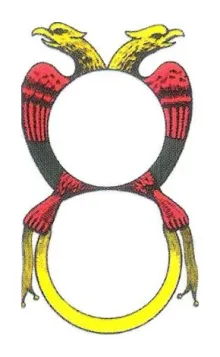
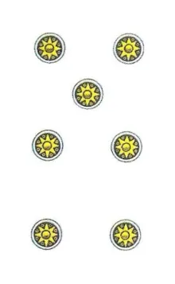
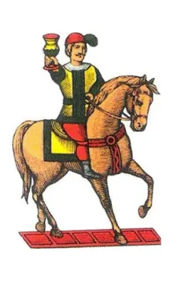
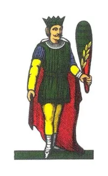
Carte piacentine
Diffuse nel Centro e in parte del Nord. Le figure sono a mezzo busto e specchiate: metà in su e metà in giù, così si leggono da tutte e due le parti. I denari hanno un volto nel mezzo.
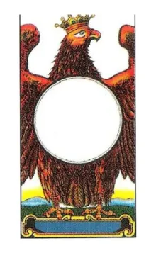
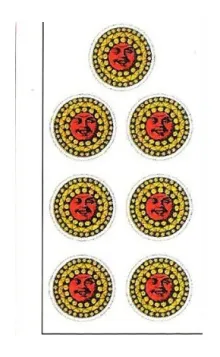
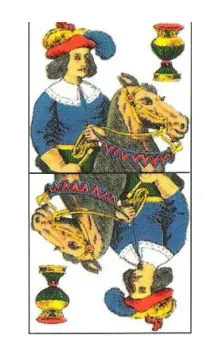
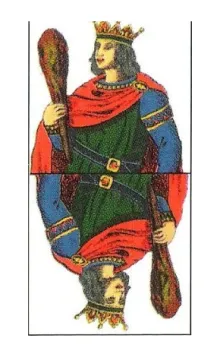
Carte bergamasche
Le carte della Lombardia. Anche qui le figure sono specchiate, con le carte dai bordi tondi e i denari rossi e neri. Nel nostro mazzo l'asso di denari è ridisegnato: quello originale porta il marchio di un produttore.
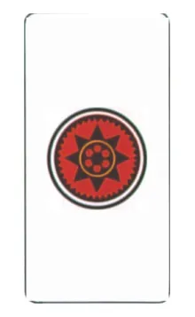
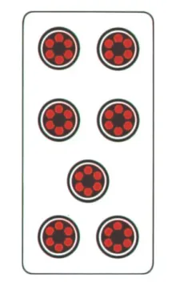
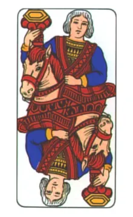
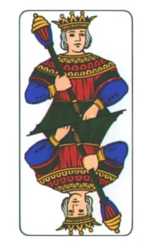
I mazzi disegnati per Settebello
Oltre ai tre tradizionali, nel gioco ci sono tre mazzi nostri: Napoletane moderne, Piacentine moderne e Funny Moderno, illustrato carta per carta.
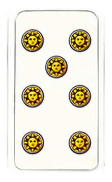
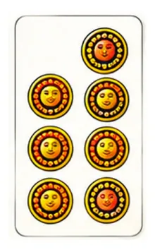
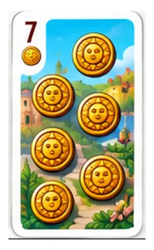
Le carte napoletane classiche sono gratis; gli altri mazzi si sbloccano giocando, con le monete del gioco. I tre mazzi tradizionali vengono da scansioni di pubblico dominio di Wikimedia Commons.